Welcome to PocketC.H.I.P.
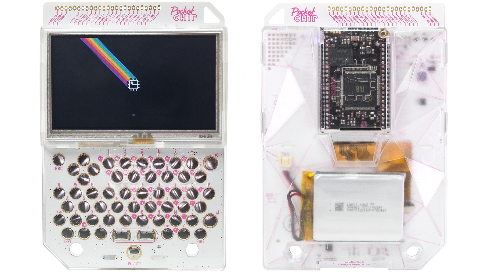
Hey! Thanks for checking out PocketC.H.I.P.!
PocketC.H.I.P. is a game console, a portable synthesizer, and a Linux field terminal. With a bit of effort, it can become a whole lot more – see PockulusC.H.I.P., PocketC.H.I.P. as a VR headset here.
The point is, PocketC.H.I.P. can be what you want it to be and we’re excited to see what you will do with your PocketC.H.I.P..
These are the Docs, which are intended to help you get started with PocketC.H.I.P.. The Docs will introduce you to the software that comes pre-installed on PocketC.H.I.P., explain how to use the system, and hopefully plant some ideas about how you can do even more with your PocketC.H.I.P..
The Docs will not teach you how to code (though it will give tips), how to program a game (though it will explain the tools), how to make music (though it will describe options), or how to build onto PocketC.H.I.P. (though it will encourage it).
Have fun!
Quick Start
This section explains how to turn on PocketC.H.I.P., setup WiFi, and charge your device.
Turn on PocketC.H.I.P. by pressing down the Home/Power button at the bottom, middle of the keyboard, for about two seconds.
PocketC.H.I.P. will take a moment to fully load, but while it does you will see the C.H.I.P. logo and then a PocketC.H.I.P. splash screen.
Once PocketC.H.I.P. is ready you will see a series of slides showing the PocketC.H.I.P. basics. Use the right arrow key or tap the right side of the screen to advance forward in the slideshow.
Once you have clicked through the basics, you will see a screen with six icons. This is the Home Screen.
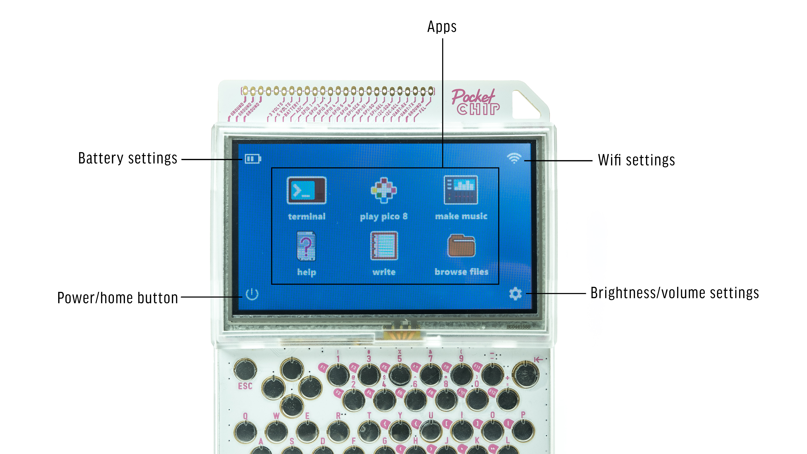
Use a finger or stylus (or really anything that’s solid and isn’t sharp) to tap on the application you want to use. Press gently enough to make contact with the screen. There’s no need to apply a lot of force. A gentle touch will do.
While using an application, press the Home/Power button to return to the Home Screen.
WiFi Setup

From the Home Screen, tap the settings icon in the bottom right corner to access the Settings Screen.
Press the button to the right of the WiFi switch to open a menu of all the networks in range. Scroll through the list and select your network by pressing the arrows above and below the network names. To refresh the network list, just exit the list and enter again.
When prompted, enter the network password in the text field, then touch the [Connect] button. It may take a few seconds to connect.
Charging
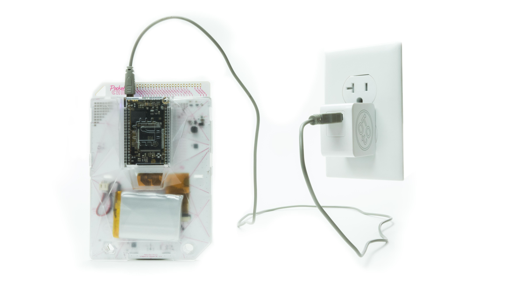
Plug in PocketC.H.I.P. to a 5-volt 1A power supply with a USB-micro cable to charge the 3.7V battery.
Because it is C.H.I.P.’s on-board circuitry that manages the charging of PocketC.H.I.P.’s battery, the C.H.I.P. must remain attached to PocketC.H.I.P. for battery charging.
PocketC.H.I.P. is compatible with most cell phone chargers that use a USB-micro cable.
Troubleshooting
If PocketC.H.I.P. becomes unresponsive, hold down the Home/Power button for eight seconds. This will cut power to PocketC.H.I.P., and immediately shut it down. Only use this shutdown method if no other shutdown methods work.
PocketC.H.I.P. at a Glance
Touchscreen
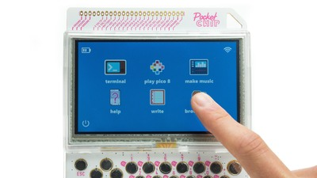
PocketC.H.I.P. features a 4.3" display made up of 480 x 272 pixels. The display is resistive touch and responds to tapping and sliding. This means you can use a finger or almost any object that isn’t sharp – you don’t want to scratch your screen.
Tap once to open apps, press buttons, and close windows.
Press and slide to scroll, adjust sliders, and resize windows.
Keyboard
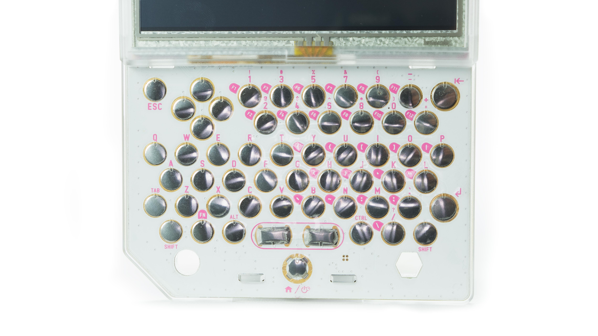
PocketC.H.I.P. has a full QWERTY keyboard with comfortably located arrow keys for gaming.
Each button is labeled with pink text, which identifies the default button behavior. Some buttons have two rows of pink text stacked atop each other. The bottom text is the primary behavior of the key. The top text identifies the button’s secondary behavior, which is accessible by holding down SHIFT and pressing the button.
For example: Holding SHIFT and pressing 1 types !
Some buttons are labeled to the top, left with white text on a pink background. These keys are mostly located on the right side of PocketC.H.I.P.’s keyboard and are for characters like function keys (F1, F2, … F11) and lesser used punctuation marks ({}<>|;). To type these specialized characters, hold the FN key and press the desired button.
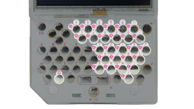
For example: Holding FN and pressing J types >
Removable enclosure

PocketC.H.I.P. is extremely hackable and we encourage you to modify the hardware. It is easy to take apart, since there are no screws used in the assembly.
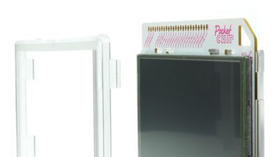
If you want to fully disassemble PocketC.H.I.P., first (carefully) remove C.H.I.P. from the back of PocketC.H.I.P.. Then flip PocketC.H.I.P. around and remove the frame (technically known as a bezel) around the perimeter of the screen. Remove the back case of PocketC.H.I.P. by pressing the tabs above the screen and on either side of the Home/Power button.
While the case is open, check out the “secret” prototyping area and GPIO solder pads inside the enclosure!

GPIO Access
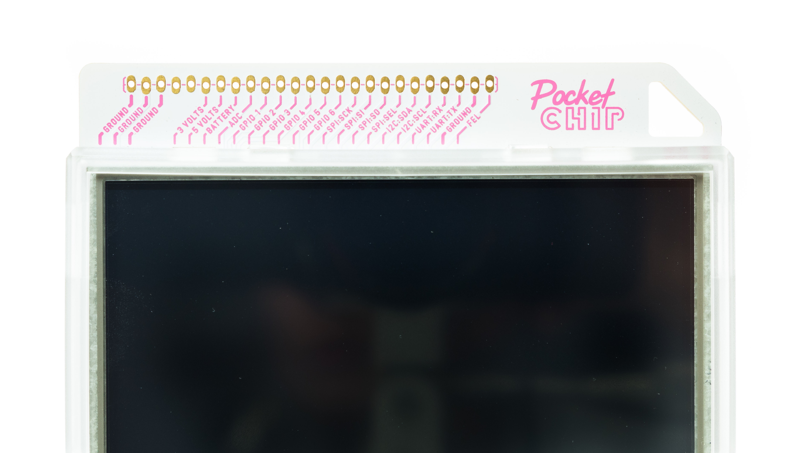
Along the top edge of PocketC.H.I.P. are input and output pins from C.H.I.P.. These are great for attaching and controlling sensors, motors, and LEDs.
See the C.H.I.P. documentation to learn how to use them here.
Pencil stand

Give your hands a break! You can prop PocketC.H.I.P. up on a table with a pencil or pen. Pencils go in the right-hand-side pencil hole, and pens in the left hole. You only need one.
Power and Charging
Battery Life

Your PocketC.H.I.P. uses a 3.7-volt LiPo battery, that should last for about five hours of use. Increase battery life by dimming the screen brightness and turning off WiFi.
The top left corner of the screen shows your battery level, and PocketC.H.I.P. will warn you when the battery charge is getting too low for operation.
Charge PocketC.H.I.P.
Plug PocketC.H.I.P. into a 5-volt 1A power supply with a USB-micro cable to charge the 3.7V battery.
Because it’s C.H.I.P.’s on-board circuitry that manages the charging of PocketC.H.I.P.’s battery, the C.H.I.P. must remain attached to PocketC.H.I.P. for battery charging.
PocketC.H.I.P. is compatible with with most cell phone chargers that use a USB-micro cable.
Sleep and Shutdown
Sleep
Sleep is a low-power state that saves battery, and also saves you time, since it’s faster for PocketC.H.I.P. to wake from sleep than to boot from a powered-off state.
To enter sleep mode, tap the power icon in the bottom left corner of the home screen and select “Sleep.” from the menu.
PocketC.H.I.P. is designed to turn off the screen and backlight after a few minutes without any user interaction.
To wake from either sleep state, simply touch the screen or press a key.
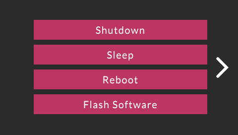
Shutdown
Shutdown PocketC.H.I.P. by pressing the power icon in the bottom left corner of the home screen and tapping “shutdown.”
If for some reason, PocketC.H.I.P. becomes unresponsive, you can also shut down PocketC.H.I.P. by holding down the HOME/Power button for eight seconds. This cuts battery power to PocketC.H.I.P. and shuts it off. Only use this method if all other methods do not work.
Using PocketC.H.I.P.
Keyboard Shortcuts
PocketC.H.I.P. has a few keyboard shortcuts that will make it faster for you to do common tasks on the device.
Hold ALT and press TAB to change the current window (also known as window focus).
Hold CTRL and press q to quit an application.
Flashing
To flash your PocketC.H.I.P. to the latest factory image, tap the power button and then press the flash software button. Then use a USB cable to connect PocketC.H.I.P. to a computer and follow the directions on flashing.

WARNING: This will permanently delete all the data on PocketC.H.I.P., so backup anything you want to keep!
Applications
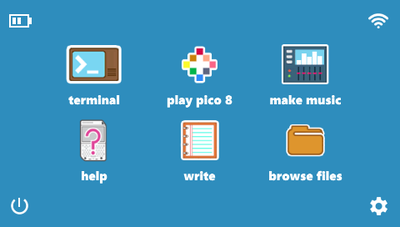
Your PocketC.H.I.P. comes with six applications on the Home Screen.
- PICO-8 - play, create, share 8-bit games
- SUNVOX - listen or compose electronic music
- Terminal - use a Linux shell to run commands
- Write - a lightweight text editor
- File Browser - a graphical file browser
- Help - the same documentation you’re reading here, built-in to PocketC.H.I.P.
PICO-8
Play PICO-8

Play games, change games, and make games with PICO-8! With a couple keystrokes, you can join the PICO-8 community and modify their games, or even make your own!
For more resources to learn PICO-8, check out this tutorial video series link, this video how to make a basic game link, and, of course, the PICO-8 Fanzine link.
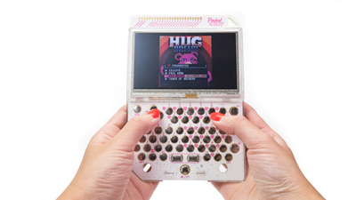
PICO-8 starts in splore mode, which lets you select which game to load.
If PocketC.H.I.P. is connected to WiFi, PICO-8 community made games can be downloaded and played here. Navigate the menus using the arrow keys, and press 8 to select a game.
- Favourites: Save games to this list by pressing ESC while in the game and selecting “Favourite”. Games on this list are playable even when you’re not connected to WiFi.
- New: Lists the newest additions to the PICO-8 community.
- Featured: Lists the top-rated games from the PICO-8 community.
- Work In Progress: Lists recent releases of unfinished games submitted by members of the community.
- Collaboration: Lists user-submitted resources, remixes, and other useful things for others to use in their creations.
- Search: Performs a text search of PICO-8’s game library
- /: Lets you navigate the PICO-8 folders on your PocketC.H.I.P.
While in the splore mode, press ESC and select EXIT TO CONSOLE to start PICO-8’s command line interface. PICO-8’s command line commands are listed below:
- Help lists the available commands
- Splore return to cart explorer
- dir list the contents of the current directory
- cd [directory name] change to the desired directory
- cd .. go up a directory
- cd / change back to top directory (on PICO-8’s virtual drive)
- keyconfig customize the keys used by all games
- mkdir make a new directory
- folder open the current directory in the host operating system’s file browser
- load [name of game] load a game from the current directory (this is like putting a cartridge into the console)
- run plays the cart that is currently loaded
- save [filename] saves the currently loaded cart with the given name (this is used when you’ve made changes to the game’s code, graphics, or music)
Make Games (with PICO-8)
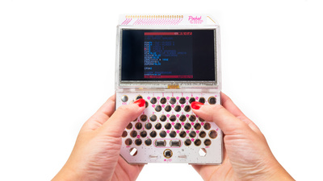
Gamers, get ready to become game-makers. In addition to playing the community’s games, PICO-8 allows you to modify existing games, or create games of your own using the code, graphics, and sound editors.
Code Editor
Access the code editor from the command line by pressing ESC. If you are in the middle of a game, press ESC and select EDIT THIS CART to edit the game’s code. Some other helpful shortcuts are:
- Hold SHIFT to select multiple characters or lines (or tap-and-drag)
- CTRL-X, CTRL-C, CTRL-V to cut, copy, or paste a selection
- CTRL-Z, CTRL-Y to undo, redo
- CTRL-F, CTRL-G to search for text, repeat search
- ALT-UP, ALT-DOWN to navigate to the previous, next function
The code editor is not the only editor in PICO-8. Access the other editors by tapping on the icons in the upper right-hand corner of the editor.
Sprite Editor
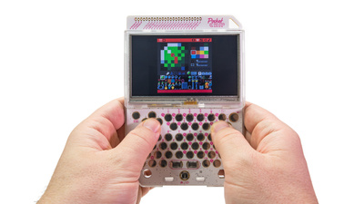
Use the sprite editor to create the artwork that make up tiles, characters, or other graphical elements of the game. The navigator at the bottom of the sprite editor screen shows an 8x8 pixel box that is displayed in the sprite sheet window, but it is possible to use freeform tools (pan, select) to edit larger areas.
Use the following tools to edit sprites:
Draw Tool
- Click on the desired color and then click in the editor window to apply the color to each pixel.
- Hold the CTRL button and click on a pixel to replace all of the same-colored pixels in the window with the selected color.
Stamp Tool
- Select an area of the sprite sheet that you want to copy using the select tool.
- Select the stamp tool and click the location where you want the copied pixels to be pasted.
- Hold CTRL to stamp with transparency (this pastes all of the non-black pixels in the selection).
Select Tool
- Use the shortcut: SHIFT or S to save time.
- Click and drag with the select tool to highlight an area of the sprite sheet.
- Enter or click to select none.
Pan Tool
- Use the shortcut: Spacebar.
- Click and drag to move around the sprite sheet.
Fill Tool
- Fill an area with the selected color.
- If you have selected an area of the sprite sheet, the fill will be limited to the selected area.
- If no selection is active, the fill will be limited to the area in the editor window.
Map Editor
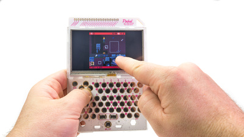
The tools for the map editor work similarly to those in the sprite editor. However, rather than choosing colors and drawing directly on the map sheet, select a sprite and use the draw or fill tool to place sprites into the map sheet.
Sound Effects Editor
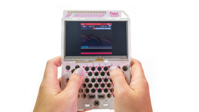
PICO-8’s sound editor has two view modes: graph view and tracker view. Switch between modes by tapping on the graph and tracker buttons in the upper-left corner of the sound editor.
In both views, the number in the top left, under the view selector is the sound effect number. PICO-8 can handle 64 different effects.
Change the speed of the sound by clicking on the number in the box labelled SPD. Tap and drag to change the value (dragging left decreases, dragging right increases). The SPD value describes the duration of each note, so the higher the value, the slower the sound will play.
The LOOP values define the start and end points of a section of the sound effect that repeats. These can be changed by tapping and dragging like the SPD values.
Select from the eight available instruments by clicking on the gray waveform boxes below the SPD and LOOP fields.
Press the spacebar to play/stop the current sound effect.
Graph mode
In graph mode, choose an instrument and then click-and-drag left-to-right to draw the sound across the pitch window. Draw higher in the window to create a sound with a higher pitch. Adjust the volume of each note, with the sliders in the volume window at the bottom of the graph mode screen.
Tracker mode
In the tracker mode, each line of six dots represents a note. Each dot represents an aspect of the notes. In left-to-right order they are: frequency, octave, instrument, volume, and effect.
Frequency
- Denoted by the letter of the musical pitch.
- Input the pitches, using the q2w3er5t6y7ui keys like a piano.
- Q is a C note, W is a D note.
- The number keys are the sharps and flats (like the black keys on a piano).
Octave
For each note, choose octave 1, 2, 3, or 4 in the OCT field at the top, or type the corresponding number: 1 is the lowest octave and 4 is the highest.
Instrument
Choose one of the instruments in the gray waveform boxes or type the corresponding number (0 through 7).
Volume
Choose volume level in the VOL field or type the corresponding number (0 through 7).
Effect
Choose an effect from the boxes under the instruments or type the corresponding number (0 through 7). The 8 effects are:
- 0 - none
- 1 - slide
- 2 - vibrato
- 3 - drop
- 4 - fade in
- 5 - fade out
- 6 - fast arpeggio
- 7 - slow arpeggio
Music Editor
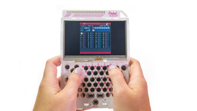
The music editor allows up to four effects at a time for your game’s soundtrack. Click on the boxes above each column to activate the track and choose which effects will be included in each song pattern.
Patterns can be set to move to the next pattern, repeat the current pattern, or stop when finished with the arrow and stop icons on the upper right.
PICO-8 can hold up to 64 song patterns.
SunVox
The SunVox tracker is a fully featured music production studio. It’s lightweight, sounds great, and is designed to work with a stylus on a single, small screen. As a result, it’s a perfect fit for for making music and playing with sound on PocketC.H.I.P..
To get started launch SunVox, put on some headphones, press F9 (remember, you’ll need to hold the FN key and press 9 to get F9) to start playback, and dive into a complete world of electronic sound.
Interface Overview
Here’s a quick overview of what you see when you launch SunVox, and what the different parts of the interface do. Visit the SunVox page for more information, including complete keyboard mappings. You may also find this SunVox video helpful.

Pattern Editor

The Pattern Editor is like a page of sheet music. Instead of staffs, measures, clefs, notes, and articulations, it has 32 rows and several columns that represent pitch, timing, and even how a pitch is played (soft, hard, bright, etc).
Patterns represent chunks of a song that will later be dropped into the timeline of the song and arranged with other patterns.
Note: All the numbers are in hexadecimal (see hexadecimal) so instead of the number 46, you’ll see 2E. These notes can play drums, lead instruments that sound like a guitar (maybe), bass notes, or even atonal washes of sound.
In the pattern editor you can add notes and note modifiers to compose patterns.
Spacebar toggles edit mode on and off, use the arrow keys to select rows, use letters to enter notes, use numbers to enter (hexadecimal) values for velocity, module, and control values.
Touch Keyboard
The Touch Keyboard is in the middle of the screen. Tap on it and you’ll hear sound.
If you’re editing a Pattern, you can use this to enter notes. Just tap in the first column in the editor where you want a note to play and then tap the note on the touch keyboard. The editor will record the note you play and then move to the next line so you can tap the next note you want to play.
You can also use PocketC.H.I.P.’s QWERTY keyboard to enter notes. To enter notes on the QWERTY keyboard, use it similar to a piano. For example, Z is a c note and X is a d note.
From left to right across the bottom row of the keyboard, the notes ascend.
For sharp and flat notes, use the row above. For example, S is a c-sharp because it is above and between the Z and X keys (similar to where the c-sharp key is on a piano, above and between the c and d notes).
Modules (synths and effects)
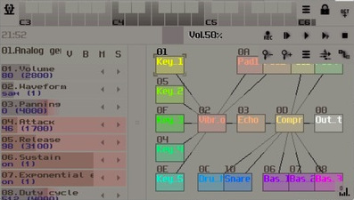
The Module Editor is located below the Touch Keyboard on its right. This includes the different instruments, synthesizers, or effects you can use to change the sounds that you put into the patterns above. You can add new modules, delete current modules or rearrange modules to fit your needs.
With any sounds you make, you need something to generate the sound first. Double-tap on the background in the module editor and then choose a generator from the list. Once you’ve picked a generator need to connect it to the output. Do this by holding SHIFT and then tapping and dragging from the generator to the OUT box
You can also add effects to the sounds made by the generator. Double-tap in the background again and choose an effect from the list. Now change the route the sound goes through by tapping and dragging from the generator to the effect. Then tap-and-drag from the effect to the output box.
You can have multiple instruments and different paths for the sound in the editor at one time. When editing patterns, tap on the generator you want to use and then edit the pattern. Changes to the pattern will be made using the currently selected generator.
To delete an effect or generator, double-tap the module and tap the delete button.
Parameter Controls
Parameter Controls for the currently selected module are in the bottom left corner of the interface. Violin players can bend a string and change how they bow, vocalists can shape their mouths and vocal chords, electric guitarists can stomp on pedals and hit the whammy bar, synthesizer nerds can turn knobs and sliders. In SunVox, you can modify how a synth or effect sounds using the horizontal sliders in the Parameter Controls.
Tap on a module and use the Parameter Controls on the left to modify the sound. Play the (piano or PocketC.H.I.P.) keyboard to hear the sound of a synth module. Use CTRL-arrows to jump to different modules. SHIFT-drag to connect and disconnect modules.
Resize Handles
Tap-and-drag in these areas to resize the panels.
Transport
Record new pattern into timeline, play from beginning, play, play pattern, stop.
Octave Up/Down
Change the octave of the touch keyboard.
Edit Pattern Indicator
When locked, you can’t make changes to the pattern.
Spacebar unlocks the world of pattern editing!
Volume
Tap-and-drag the volume control to change output volume.
Menu Items
Sunvox has one simple menu. Tap here to save and load projects, set preferences like MIDI controllers, and the ultra-fun Touch Theremin feature! Select it in the Menu, and start making some noise!
Switch To Timeline
The Timeline allows you to place, move, and rearrange patterns to create a song. On PocketC.H.I.P.’s small screen, you’ll need to use the Switch To Timeline button.
In Timeline, you can also freely record notes while you play them with the Record button, or you can clone patterns to repeat them. Move the patterns blocks around to create your composition. When finished, you can render a finished stereo file and distribute it as you want!

MIDI
You can attach a MIDI keyboard or controller to PocketC.H.I.P.’s USB port and have even more fun with SunVox. Not only can you play notes from a keyboard, but you can use MIDI knobs and sliders to control parameters of different synths. Tweak on!
Terminal

Many may find the Terminal archaic or intimidating, it’s a place to type commands directly to the computer for execution and evaluation by the operating system. There are no icons, just text.
Use the terminal to dive into the operating system’s guts, quickly move files around, play with PocketC.H.I.P.’s GPIO, or extend its capabilities. There’s a primer on using Terminal in the C.H.I.P. documentation here if you want to learn more.
Write

Write is a minimalist text editor that’s well suited for basic text entry tasks. If you’re looking to code with Write, you’ll be pleased to learn that it supports line numbering and auto indentation, just look under the “Option” menu.
File Browser
The File Browser provides a visual representation of the files on your PocketC.H.I.P. using icons. Drag, drop, and double-click your way through this application for full control over every file on your device.
Help

You are reading it right now. No kidding! This document is available online and locally on PocketC.H.I.P., which means anywhere PocketC.H.I.P. goes, help will be right there with it.
Settings
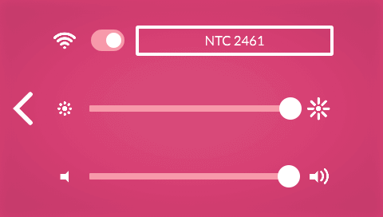
Use the PocketC.H.I.P. settings to change WiFi, screen brightness, or volume levels.

To access the PocketC.H.I.P. settings, tap on the sprocket icon on the Home Screen.
WiFi & Bluetooth
From the Settings Screen, tap the switch next to the WiFi icon to turn WiFi on.
Press the button to the right of the WiFi switch to open a menu of all the networks in range. Scroll through the list by tapping the onscreen arrows, and select your network by tapping on its name.
When prompted, enter the network password in the text field, then touch the [Connect] button. It may take a few seconds to connect.
Currently only WiFi is configurable from the PocketC.H.I.P graphical interface. If you want to configure Bluetooth, consult the C.H.I.P. documentation page here.
Screen Brightness

Tap the brightness slider on the left to decrease brightness or tap the right to increase. Lowering the brightness is an easy way to increase battery life.
Volume
Adjust the volume slider by tapping on the left to decrease volume or on the right to increase it. Of course, you’ll need to have headphones or speakers attached to PocketC.H.I.P. to hear anything.
Security
Just like you have a username and password for your e-mail account, PocketC.H.I.P. has a username and password for its operating system. The main user account on PocketC.H.I.P. is chip, and the password is also chip. Both username and password are case sensitive.
At startup, PocketC.H.I.P. automatically logs you in as chip. This means there’s no need to manually enter chip’s password chip. There are times when you’ll need to use the chip password, but you can get most things done without it.
PocketC.H.I.P. also has a second username called root, which should only be used for administrative tasks such as installing and removing software. The root password is also chip, and both are also case sensitive.
Never login directly as root, since it is extremely easy to delete critical files in the system. Instead, use the system administration command sudo, which provides a bit of protection from accidentally breaking your system.
For more information on using sudo, see the C.H.I.P. docs here.
| Username | Password |
|---|---|
| chip | chip |
| root | chip |
Changing Your Password

You should change your password for both the chip and root account to something other than chip. Open the terminal application from the PocketC.H.I.P. Home Screen, type the following command:
passwd
and press ENTER.
You’ll be prompted for your current password, which is chip and then required to enter in your new password twice. That’s it!
Using Accessories
Just because PocketC.H.I.P. is complete with a keyboard and screen doesn’t mean you can’t add speakers, storage, or wireless gadgets to make it even more fun.
PocketC.H.I.P. input and output ports are all handled by C.H.I.P.. Chances are good that if an accessory works with C.H.I.P., it will work with PocketC.H.I.P.!

Audio
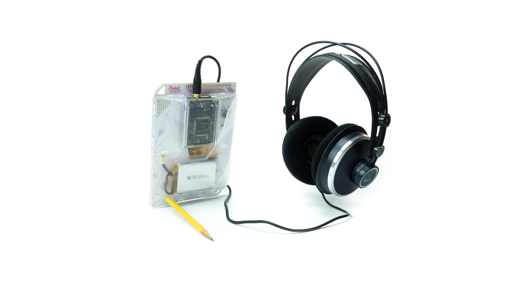
PocketC.H.I.P. does not have a built-in speaker, but that doesn’t mean it can’t output sound.
To listen to audio from PocketC.H.I.P., attach any wired headphones or speakers to the audio jack at the top of the device. This jack is known as a TRRS jack and can accommodate headphones with built-in microphones.
Micro-USB
Use the micro-USB port for charging PocketC.H.I.P. with a 5-volt, 1-amp power supply. Most cell phone chargers that use a USB-micro cable will work with PocketC.H.I.P.
Standard USB
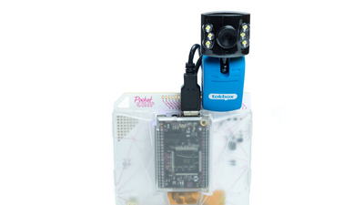
Use the standard USB port for attaching USB accessories, like a keyboard, mouse, MIDI controller, sound card, hard drive, or more.
USB devices take power to operate. If they are not independently powered, they will reduce the battery life of PocketC.H.I.P. or cause operation to become sporadic.
Glossary
apt-get: the package manager used for installing, upgrading, and removing application in Debian Linux.
Bezel: section of the case that clips around the touchscreen.
Booting: the process of PocketC.H.I.P. powering on and loading Debian.
Command Line: the area in the Terminal where text is input for the Operating System to evaluate. Debian: a version of the Linux Operating System that runs on PocketC.H.I.P..
Fantasy Console: a console game system that does not have dedicated, specific hardware to run its software. For example, PICO-8.
Flashing: the process of overwriting the contents of NAND with an Operating System and Applications.
Linux: a computer Operating System that runs on all different types of hardware. Everything from bank ATMs and cell phones to C.H.I.P. and PocketC.H.I.P.
NAND: a type of storage used on PocketC.H.I.P. for the OS, applications, and all your files.
Open Source Hardware: Open source hardware is hardware whose design is made publicly available so that anyone can study, modify, distribute, make, and sell the design or hardware based on that design. More info at the Open Source Hardware Association.
Open Source Software: Very briefly, Open Source Software is software where the source code for a program is made freely available. But there’s a lot more to this, as you can read at the Open Source Initiative website.
QWERTY keyboard: is a layout of keys where the top row’s first six keys spell “qwerty”.
SCP: a utility to transfer files to different computers.
Shell: see Terminal
SSH: (aka Secure Shell) is a utility used to login to remote computers running SSH service.
Stylus: a pointing device
Terminal: a program used to enter text commands for the Operating System to execute or interpret.
TRRS jack: a connector commonly used for audio or video equipment. TRRS stands for tip, ring, ring, and sleeve and refers the the way the male connector is divided.
FAQ
Can I take C.H.I.P. out of PocketC.H.I.P. use it? At this time, it will not work as expected without reflashing. The C.H.I.P.s in PocketC.H.I.P. run a custom graphics software that’s designed for the touchscreen and PocketC.H.I.P. keyboard. C.H.I.P. may boot, but the resolution and input will not work as expected.
Is it Legal to Modify PocketC.H.I.P.? Yes. PocketC.H.I.P. and C.H.I.P. are open source hardware. We encourage you to modify PocketC.H.I.P. and be sure to share what you’ve done with our community!
Will my microUSB charger work with PocketC.H.I.P.? PocketC.H.I.P. is compatible with with most cell phone chargers that use a USB-micro cable. PocketC.H.I.P. needs a power supply capable of outputting 5-volts with at least 1 amp.
Can I connect PocketC.H.I.P. to a second display? No. At this time PocketC.H.I.P. does not support multiple displays.
Is it OK to eat PocketC.H.I.P.? No! Neither C.H.I.P. nor PocketC.H.I.P. should ever be eaten, even by C.H.I.P.py Ruxpin.
Will my Bluetooth Device Work? Yes, so long as the device is supported under Debian Linux. However, you will need to setup the bluetooth pairing using the terminal here. Our initial release of PocketC.H.I.P. does not provide graphical bluetooth configuration.
Pinch-zooming isn’t working, is my screen bad? Your screen is fine. The resistive touchscreen used in PocketC.H.I.P. does not support pinch gestures.
How can I get PockulusC.H.I.P.? Good news! You already almost have one. All you need to do is 3D print the file at here or find a friend to do it for you.
How can I contact Next Thing Co.? Send us an e-mail at ahoyahoy@nextthing.co.
License
U-Boot
PocketC.H.I.P. boots using U-Boot 2015.10 (GPLv2) with custom patches.
Source code is available at:
- https://github.com/CHIP-u-boot
See below for the full text of the GPLv2.
Linux
PocketC.H.I.P. runs mainline Linux 4.3 (GPLv2) with custom patches.
Source code is available at:
- https://github.com/CHIP-Linux
See below for the full text of the GPLv2.
PocketC.H.I.P. runs Debian 8 (Jessie)
- Debian contains various open source software.
- The license for a particular debian package is included in the package documentation in /usr/share/doc/
.
PocketC.H.I.P. Launcher
The PocketC.H.I.P. Launcher is Copyright © 2016 Next Thing Co.
Permission is hereby granted, free of charge, to any person obtaining a copy of this software and associated documentation files (the “Software”), to deal in the Software without restriction, including without limitation the rights to use, copy, modify, merge, publish, distribute, sublicense, and/or sell copies of the Software, and to permit persons to whom the Software is furnished to do so, subject to the following conditions:
The above copyright notice and this permission notice shall be included in all copies or substantial portions of the Software.
THE SOFTWARE IS PROVIDED “AS IS”, WITHOUT WARRANTY OF ANY KIND, EXPRESS OR IMPLIED, INCLUDING BUT NOT LIMITED TO THE WARRANTIES OF MERCHANTABILITY, FITNESS FOR A PARTICULAR PURPOSE AND NONINFRINGEMENT. IN NO EVENT SHALL THE AUTHORS OR COPYRIGHT HOLDERS BE LIABLE FOR ANY CLAIM, DAMAGES OR OTHER LIABILITY, WHETHER IN AN ACTION OF CONTRACT, TORT OR OTHERWISE, ARISING FROM, OUT OF OR IN CONNECTION WITH THE SOFTWARE OR THE USE OR OTHER DEALINGS IN THE SOFTWARE.
The PocketC.H.I.P. Launcher is built using Juice
https://github.com/julianstorer/JUCE
Most JUCE modules are shared under the GNU Public Licence (GPLv2, v3, and the AGPLv3). This means that the code can be freely copied and distributed, and costs nothing to use in other GPL applications. One module (the juce_core module) is permissively licensed under the ISC.
PICO-8
PICO-8 v0.1.6 http://www.pico-8.com © Copyright 2014-2016 Lexaloffle Games LLP
Author: Joseph White // hey@lexaloffle.com
PICO-8 is built with:
- SDL2 http://www.libsdl.org
- Lua 5.2 http://www.lua.org - see license below
- GIFLIB http://giflib.sourceforge.net/
Copyright © 1994–2015 Lua.org, PUC-Rio.
Permission is hereby granted, free of charge, to any person obtaining a copy of this software and associated documentation files (the “Software”), to deal in the Software without restriction, including without limitation the rights to use, copy, modify, merge, publish, distribute, sublicense, and/or sell copies of the Software, and to permit persons to whom the Software is furnished to do so, subject to the following conditions: The above copyright notice and this permission notice shall be included in all copies or substantial portions of the Software.
THE SOFTWARE IS PROVIDED “AS IS”, WITHOUT WARRANTY OF ANY KIND, EXPRESS OR IMPLIED, INCLUDING BUT NOT LIMITED TO THE WARRANTIES OF MERCHANTABILITY, FITNESS FOR A PARTICULAR PURPOSE AND NONINFRINGEMENT. IN NO EVENT SHALL THE AUTHORS OR COPYRIGHT HOLDERS BE LIABLE FOR ANY CLAIM, DAMAGES OR OTHER LIABILITY, WHETHER IN AN ACTION OF CONTRACT, TORT OR OTHERWISE, ARISING FROM, OUT OF OR IN CONNECTION WITH THE SOFTWARE OR THE USE OR OTHER DEALINGS IN THE SOFTWARE.
SunVox
SunVox modular synthesizer Copyright © 2002 - 2016, Alexander Zolotov nightradio@gmail.com, WarmPlace.ru SunDog engine (part of SunVox)
Copyright © 2002 - 2016, Alexander Zolotov nightradio@gmail.com, WarmPlace.ru
Ogg Vorbis ‘Tremor’ integer playback codec Copyright © 2002, Xiph.org Foundation
GNU General Public License
GNU GENERAL PUBLIC LICENSE Version 2, June 1991
Copyright © 1989, 1991 Free Software Foundation, Inc., 51 Franklin Street, Fifth Floor, Boston, MA 02110-1301 USA Everyone is permitted to copy and distribute verbatim copies of this license document, but changing it is not allowed.
Preamble
The licenses for most software are designed to take away your freedom to share and change it. By contrast, the GNU General Public License is intended to guarantee your freedom to share and change free software–to make sure the software is free for all its users. This General Public License applies to most of the Free Software Foundation’s software and to any other program whose authors commit to using it. (Some other Free Software Foundation software is covered by the GNU Lesser General Public License instead.) You can apply it to your programs, too.
When we speak of free software, we are referring to freedom, not price. Our General Public Licenses are designed to make sure that you have the freedom to distribute copies of free software (and charge for this service if you wish), that you receive source code or can get it if you want it, that you can change the software or use pieces of it in new free programs; and that you know you can do these things.
To protect your rights, we need to make restrictions that forbid anyone to deny you these rights or to ask you to surrender the rights. These restrictions translate to certain responsibilities for you if you distribute copies of the software, or if you modify it.
For example, if you distribute copies of such a program, whether gratis or for a fee, you must give the recipients all the rights that you have. You must make sure that they, too, receive or can get the source code. And you must show them these terms so they know their rights.
We protect your rights with two steps: (1) copyright the software, and (2) offer you this license which gives you legal permission to copy, distribute and/or modify the software.
Also, for each author’s protection and ours, we want to make certain that everyone understands that there is no warranty for this free software. If the software is modified by someone else and passed on, we want its recipients to know that what they have is not the original, so that any problems introduced by others will not reflect on the original authors’ reputations.
Finally, any free program is threatened constantly by software patents. We wish to avoid the danger that redistributors of a free program will individually obtain patent licenses, in effect making the program proprietary. To prevent this, we have made it clear that any patent must be licensed for everyone’s free use or not licensed at all.
The precise terms and conditions for copying, distribution and modification follow.
GNU GENERAL PUBLIC LICENSE TERMS AND CONDITIONS FOR COPYING, DISTRIBUTION AND MODIFICATION
- This License applies to any program or other work which contains a notice placed by the copyright holder saying it may be distributed under the terms of this General Public License. The “Program”, below, refers to any such program or work, and a “work based on the Program” means either the Program or any derivative work under copyright law: that is to say, a work containing the Program or a portion of it, either verbatim or with modifications and/or translated into another language. (Hereinafter, translation is included without limitation in the term “modification”.) Each licensee is addressed as “you”.
Activities other than copying, distribution and modification are not covered by this License; they are outside its scope. The act of running the Program is not restricted, and the output from the Program is covered only if its contents constitute a work based on the Program (independent of having been made by running the Program). Whether that is true depends on what the Program does.
- You may copy and distribute verbatim copies of the Program’s source code as you receive it, in any medium, provided that you conspicuously and appropriately publish on each copy an appropriate copyright notice and disclaimer of warranty; keep intact all the notices that refer to this License and to the absence of any warranty; and give any other recipients of the Program a copy of this License along with the Program.
You may charge a fee for the physical act of transferring a copy, and you may at your option offer warranty protection in exchange for a fee.
You may modify your copy or copies of the Program or any portion of it, thus forming a work based on the Program, and copy and distribute such modifications or work under the terms of Section 1 above, provided that you also meet all of these conditions:
a) You must cause the modified files to carry prominent notices stating that you changed the files and the date of any change.
b) You must cause any work that you distribute or publish, that in whole or in part contains or is derived from the Program or any part thereof, to be licensed as a whole at no charge to all third parties under the terms of this License.
c) If the modified program normally reads commands interactively when run, you must cause it, when started running for such interactive use in the most ordinary way, to print or display an announcement including an appropriate copyright notice and a notice that there is no warranty (or else, saying that you provide a warranty) and that users may redistribute the program under these conditions, and telling the user how to view a copy of this License. (Exception: if the Program itself is interactive but does not normally print such an announcement, your work based on the Program is not required to print an announcement.)
These requirements apply to the modified work as a whole. If identifiable sections of that work are not derived from the Program, and can be reasonably considered independent and separate works in themselves, then this License, and its terms, do not apply to those sections when you distribute them as separate works. But when you distribute the same sections as part of a whole which is a work based on the Program, the distribution of the whole must be on the terms of this License, whose permissions for other licensees extend to the entire whole, and thus to each and every part regardless of who wrote it.
Thus, it is not the intent of this section to claim rights or contest your rights to work written entirely by you; rather, the intent is to exercise the right to control the distribution of derivative or collective works based on the Program.
In addition, mere aggregation of another work not based on the Program with the Program (or with a work based on the Program) on a volume of a storage or distribution medium does not bring the other work under the scope of this License.
You may copy and distribute the Program (or a work based on it, under Section 2) in object code or executable form under the terms of Sections 1 and 2 above provided that you also do one of the following:
a) Accompany it with the complete corresponding machine-readable source code, which must be distributed under the terms of Sections 1 and 2 above on a medium customarily used for software interchange; or,
b) Accompany it with a written offer, valid for at least three years, to give any third party, for a charge no more than your cost of physically performing source distribution, a complete machine-readable copy of the corresponding source code, to be distributed under the terms of Sections 1 and 2 above on a medium customarily used for software interchange; or,
c) Accompany it with the information you received as to the offer to distribute corresponding source code. (This alternative is allowed only for noncommercial distribution and only if you received the program in object code or executable form with such an offer, in accord with Subsection b above.)
The source code for a work means the preferred form of the work for making modifications to it. For an executable work, complete source code means all the source code for all modules it contains, plus any associated interface definition files, plus the scripts used to control compilation and installation of the executable. However, as a special exception, the source code distributed need not include anything that is normally distributed (in either source or binary form) with the major components (compiler, kernel, and so on) of the operating system on which the executable runs, unless that component itself accompanies the executable.
If distribution of executable or object code is made by offering access to copy from a designated place, then offering equivalent access to copy the source code from the same place counts as distribution of the source code, even though third parties are not compelled to copy the source along with the object code.
You may not copy, modify, sublicense, or distribute the Program except as expressly provided under this License. Any attempt otherwise to copy, modify, sublicense or distribute the Program is void, and will automatically terminate your rights under this License. However, parties who have received copies, or rights, from you under this License will not have their licenses terminated so long as such parties remain in full compliance.
You are not required to accept this License, since you have not signed it. However, nothing else grants you permission to modify or distribute the Program or its derivative works. These actions are prohibited by law if you do not accept this License. Therefore, by modifying or distributing the Program (or any work based on the Program), you indicate your acceptance of this License to do so, and all its terms and conditions for copying, distributing or modifying the Program or works based on it.
Each time you redistribute the Program (or any work based on the Program), the recipient automatically receives a license from the original licensor to copy, distribute or modify the Program subject to these terms and conditions. You may not impose any further restrictions on the recipients’ exercise of the rights granted herein. You are not responsible for enforcing compliance by third parties to this License.
If, as a consequence of a court judgment or allegation of patent infringement or for any other reason (not limited to patent issues), conditions are imposed on you (whether by court order, agreement or otherwise) that contradict the conditions of this License, they do not excuse you from the conditions of this License. If you cannot distribute so as to satisfy simultaneously your obligations under this License and any other pertinent obligations, then as a consequence you may not distribute the Program at all. For example, if a patent license would not permit royalty-free redistribution of the Program by all those who receive copies directly or indirectly through you, then the only way you could satisfy both it and this License would be to refrain entirely from distribution of the Program.
If any portion of this section is held invalid or unenforceable under any particular circumstance, the balance of the section is intended to apply and the section as a whole is intended to apply in other circumstances.
It is not the purpose of this section to induce you to infringe any patents or other property right claims or to contest validity of any such claims; this section has the sole purpose of protecting the integrity of the free software distribution system, which is implemented by public license practices. Many people have made generous contributions to the wide range of software distributed through that system in reliance on consistent application of that system; it is up to the author/donor to decide if he or she is willing to distribute software through any other system and a licensee cannot impose that choice.
This section is intended to make thoroughly clear what is believed to be a consequence of the rest of this License.
If the distribution and/or use of the Program is restricted in certain countries either by patents or by copyrighted interfaces, the original copyright holder who places the Program under this License may add an explicit geographical distribution limitation excluding those countries, so that distribution is permitted only in or among countries not thus excluded. In such case, this License incorporates the limitation as if written in the body of this License.
The Free Software Foundation may publish revised and/or new versions of the General Public License from time to time. Such new versions will be similar in spirit to the present version, but may differ in detail to address new problems or concerns.
Each version is given a distinguishing version number. If the Program specifies a version number of this License which applies to it and “any later version”, you have the option of following the terms and conditions either of that version or of any later version published by the Free Software Foundation. If the Program does not specify a version number of this License, you may choose any version ever published by the Free Software Foundation.
If you wish to incorporate parts of the Program into other free programs whose distribution conditions are different, write to the author to ask for permission. For software which is copyrighted by the Free Software Foundation, write to the Free Software Foundation; we sometimes make exceptions for this. Our decision will be guided by the two goals of preserving the free status of all derivatives of our free software and of promoting the sharing and reuse of software generally.
NO WARRANTY
BECAUSE THE PROGRAM IS LICENSED FREE OF CHARGE, THERE IS NO WARRANTY FOR THE PROGRAM, TO THE EXTENT PERMITTED BY APPLICABLE LAW. EXCEPT WHEN OTHERWISE STATED IN WRITING THE COPYRIGHT HOLDERS AND/OR OTHER PARTIES PROVIDE THE PROGRAM “AS IS” WITHOUT WARRANTY OF ANY KIND, EITHER EXPRESSED OR IMPLIED, INCLUDING, BUT NOT LIMITED TO, THE IMPLIED WARRANTIES OF MERCHANTABILITY AND FITNESS FOR A PARTICULAR PURPOSE. THE ENTIRE RISK AS TO THE QUALITY AND PERFORMANCE OF THE PROGRAM IS WITH YOU. SHOULD THE PROGRAM PROVE DEFECTIVE, YOU ASSUME THE COST OF ALL NECESSARY SERVICING, REPAIR OR CORRECTION.
IN NO EVENT UNLESS REQUIRED BY APPLICABLE LAW OR AGREED TO IN WRITING WILL ANY COPYRIGHT HOLDER, OR ANY OTHER PARTY WHO MAY MODIFY AND/OR REDISTRIBUTE THE PROGRAM AS PERMITTED ABOVE, BE LIABLE TO YOU FOR DAMAGES, INCLUDING ANY GENERAL, SPECIAL, INCIDENTAL OR CONSEQUENTIAL DAMAGES ARISING OUT OF THE USE OR INABILITY TO USE THE PROGRAM (INCLUDING BUT NOT LIMITED TO LOSS OF DATA OR DATA BEING RENDERED INACCURATE OR LOSSES SUSTAINED BY YOU OR THIRD PARTIES OR A FAILURE OF THE PROGRAM TO OPERATE WITH ANY OTHER PROGRAMS), EVEN IF SUCH HOLDER OR OTHER PARTY HAS BEEN ADVISED OF THE POSSIBILITY OF SUCH DAMAGES.
END OF TERMS AND CONDITIONS
How to Apply These Terms to Your New Programs
If you develop a new program, and you want it to be of the greatest possible use to the public, the best way to achieve this is to make it free software which everyone can redistribute and change under these terms.
To do so, attach the following notices to the program. It is safest to attach them to the start of each source file to most effectively convey the exclusion of warranty; and each file should have at least the “copyright” line and a pointer to where the full notice is found.
This program is free software; you can redistribute it and/or modify it under the terms of the GNU General Public License as published by the Free Software Foundation; either version 2 of the License, or (at your option) any later version.
This program is distributed in the hope that it will be useful, but WITHOUT ANY WARRANTY; without even the implied warranty of MERCHANTABILITY or FITNESS FOR A PARTICULAR PURPOSE. See the GNU General Public License for more details.
You should have received a copy of the GNU General Public License along with this program; if not, write to the Free Software Foundation, Inc., 51 Franklin Street, Fifth Floor, Boston, MA 02110-1301 USA.
Also add information on how to contact you by electronic and paper mail.
If the program is interactive, make it output a short notice like this when it starts in an interactive mode:
Gnomovision version 69, Copyright © year name of author
Gnomovision comes with ABSOLUTELY NO WARRANTY; for details type show w'.
This is free software, and you are welcome to redistribute it
under certain conditions; typeshow c’ for details.
The hypothetical commands show w' andshow c’ should show the appropriate
parts of the General Public License. Of course, the commands you use may
be called something other than show w' andshow c’; they could even be
mouse-clicks or menu items–whatever suits your program.
You should also get your employer (if you work as a programmer) or your school, if any, to sign a “copyright disclaimer” for the program, if necessary. Here is a sample; alter the names:
Yoyodyne, Inc., hereby disclaims all copyright interest in the program `Gnomovision’ (which makes passes at compilers) written by James Hacker.
This General Public License does not permit incorporating your program into proprietary programs. If your program is a subroutine library, you may consider it more useful to permit linking proprietary applications with the library. If this is what you want to do, use the GNU Lesser General Public License instead of this License.